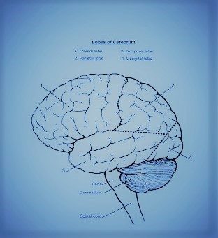

The brain is a complex organ composed 3 main parts; the cerebrum, cerebellum, and the brain stem. The cerebrum is the largest component of the brain, and divided into two hemispheres, right and left. The corpus callosum is the white fiber that connects the hemispheres. Each of the hemispheres is divided into 4 lobes: frontal, parietal, temporal, and occipital lobe. The frontal lobe is distinguished from the parietal lobe posteriorly by the central sulcus (see the image below). The frontal lobe and parietal lobes are divided inferiorly from the temporal lobe by the lateral sulcus. The parietal lobe is distinguished from the occipital lobe by the parieto-occipital sulcus on the medial surface. There are twelve cranial nerves.
| Name | Function |
|---|---|
| Olfactory | Smell |
| Optic | Sight |
| Oculomotor | Movement of eye, adjusts pupil |
| Trochlear | Moves eye |
| Trigeminal | Face sensations |
| Abducens | Moves eye |
| Facial | Facial expressions |
| Vestibulocochlear | Auditory |
| Glossopharyngeal | Taste |
| Vagus | Digestion and heart rate |
| Accessory | Movement of head |
| Hypoglossal | Movement of tongue |
Return to the top of the page.